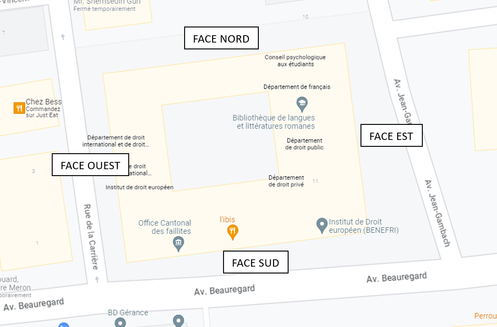
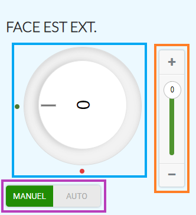

Voici la documentation sur l'utilisation de la supervision pour la gestion des stores de Beauregard. Tout ce qu'il y a à savoir est décrit dans cette dernière. S'il devait manquer une information, vous pouvez joindre les personnes suivantes:
| Personne | Entreprise | Numéro de tél. | Fonction |
|---|---|---|---|
| Zacharie Monnet | Automation 3000 | 026 469 72 81 | Spécialiste KNX + gestion bâtiment |
| Romain Chassot | Automation 3000 | 026 469 72 88 | Développeur supervision |
La supervision est disponible à l'adresse http://localhost:4200
pour autant que vous soyez connecté sur le réseau local du bâtiment. Elle est accessible depuis depuis n'importe quel appareil (PC, tablette, mobile) car
c'est une supervision WEB.
Bien entendu, il faut que la machine hébergant la supervision soit enclenchée pour que cela fonctionne.
L'avantage de ceci est que les expoitants peuvent recevoir et envoyer des commandes directement depuis leur téléphone. Cela évite aux exploitants de devoir se déplacer à chaque fois à l'endroit où est installé le PC principal.
Ce plan permet de comprendre la logique utilisée pour les façades des stores. Le voici :
Chaque façade (ou groupe) est pilotable via cette interface :
Le bouton bleu permet de gérer l'inclinaison des stores. Il est possible de modifier cette valeur entre 0 et 100 (0 le store étant complètement ouvert).
Le bouton orange permet de gérer l'ouverture des stores. Il est possible de modifier cette valeur entre 0 et 100 (0 le store étant complètement monté).
Le bouton "toggle" violet permet de gérer si les stores sont pilotés manuellement (par l'exploitant) ou alors s'ils sont gérés automatiquement (par l'automate et la gestion météo). Dans le cas ou les stores sont gérés automatiquement, il n'est plus possible de modifier les valeurs d'inclinaison et d'ouverture.